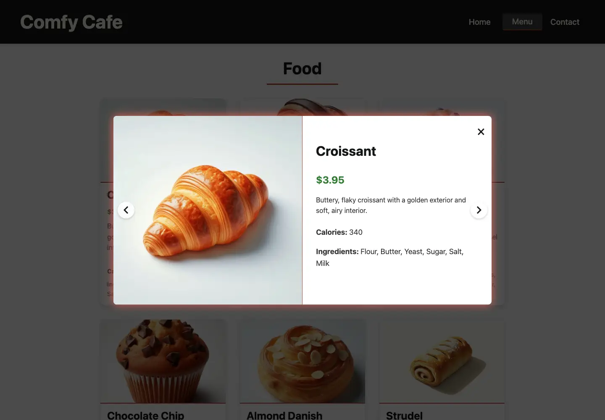

Page architecture
ES modules separate Home, Menu, Contact, and structured menu data.
Front-end case study
A warm, responsive cafe experience built with modular JavaScript.
A single-page restaurant website that combines client-side navigation, an image-rich menu, keyboard-supported item browsing, and a responsive contact experience inside one cohesive cafe brand.

The experience
The site moves from atmosphere and brand story to a full browsable menu, then closes the loop with location and contact information. Each view is generated in JavaScript while browser history keeps navigation feeling natural.
Interface design

Menu interaction
Each card opens into a focused product view with a larger image, pricing, ingredients, and nutrition information. Arrow controls and keyboard navigation let visitors continue browsing inside the modal.

Modular vanilla JavaScript
Separate modules, reusable data, and deliberate browser behavior keep the experience organized as it moves between views.
ES modules separate Home, Menu, Contact, and structured menu data.
History API routing supports natural back and forward behavior.
Responsive navigation, item highlighting, modal browsing, and keyboard controls.
Critical home styles load first, with menu and contact CSS loaded on demand.

Performance-focused refresh
A focused optimization pass reached 100 in desktop Lighthouse testing while preserving the image-led design and interactive menu.
WebP assets, responsive source sets, targeted variants, lazy loading, and a preloaded hero reduce image cost.
Webpack extracts and minifies CSS and JavaScript and generates cacheable content-hashed assets.
Semantic landmarks, ARIA state, descriptive image text, and keyboard modal controls support more ways to browse.
Explore the finished project
Browse the menu, open individual items, and explore the responsive restaurant experience.
Visit Comfy Cafe ↗